Понад 3000 пацієнтів щороку довіряють нам своє здоров'я. Ось їхні реальні результати.
Фотографії до та після, реальні відгуки батьків та пацієнтів
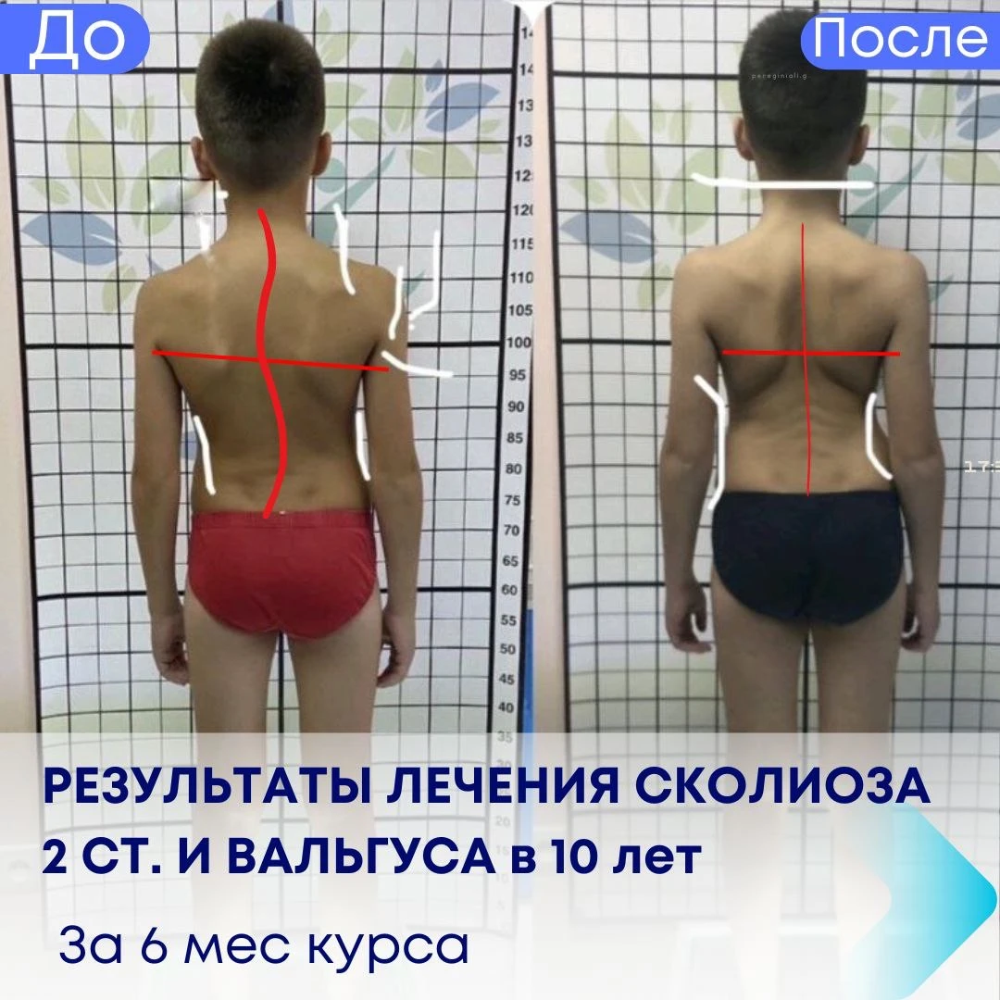
Дитині 10 років, сколіоз 2 ступеня та вальгусна деформація стоп. Після 6 місяців занять — значне покращення постави, зменшення дуги сколіозу на рентгені. Іван — справжній фахівець!
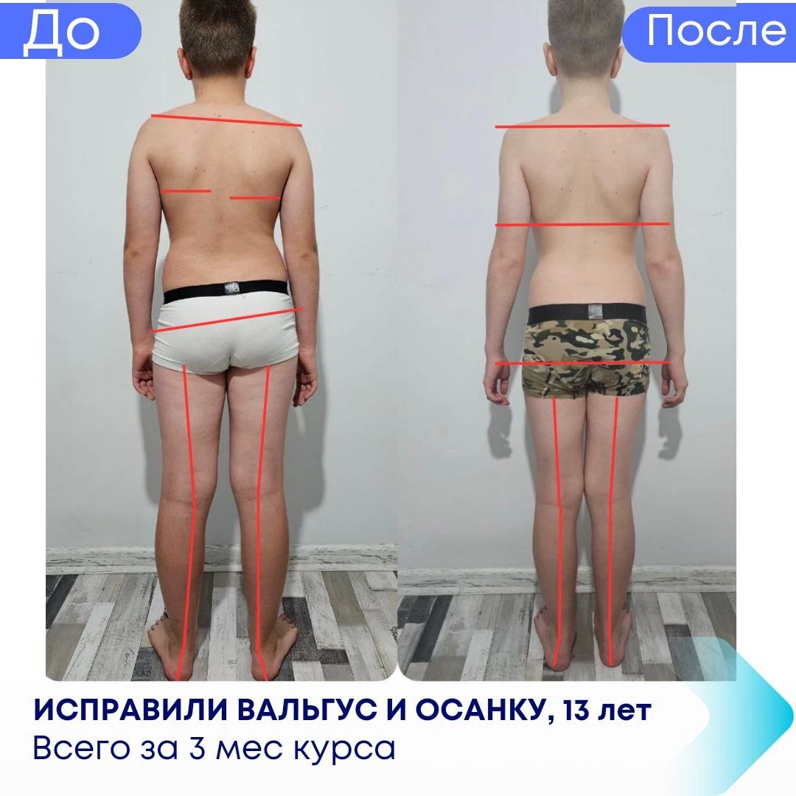
Звернулися з вальгусом та порушенням постави. За 3 місяці роботи з Іваном — результат перевершив очікування. Дитина ходить правильно, більше не скаржиться на болі у ногах.
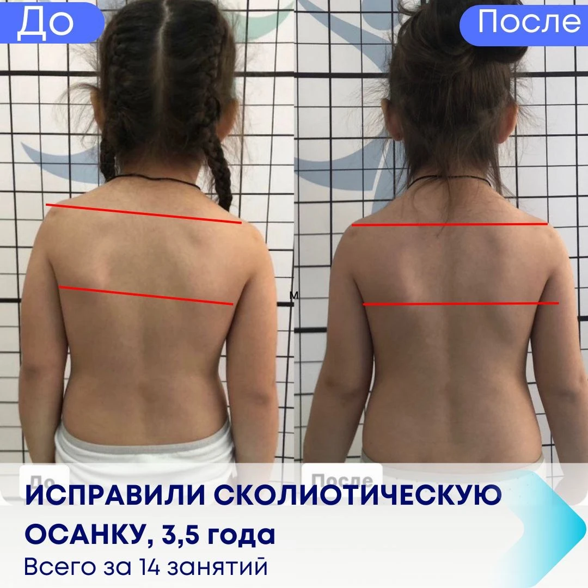
Результат помітний вже після 14 занять. Спина рівніша, дитина сама зауважує зміни. Методика Schroth — це справді ефективно. Дякуємо Івану Газіну!
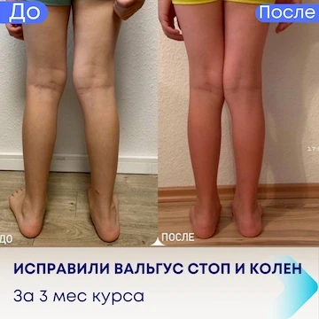
Три місяці регулярних занять — і результат очевидний. Фото говорять самі за себе. Дуже вдячні Івану за його підхід та терпіння.
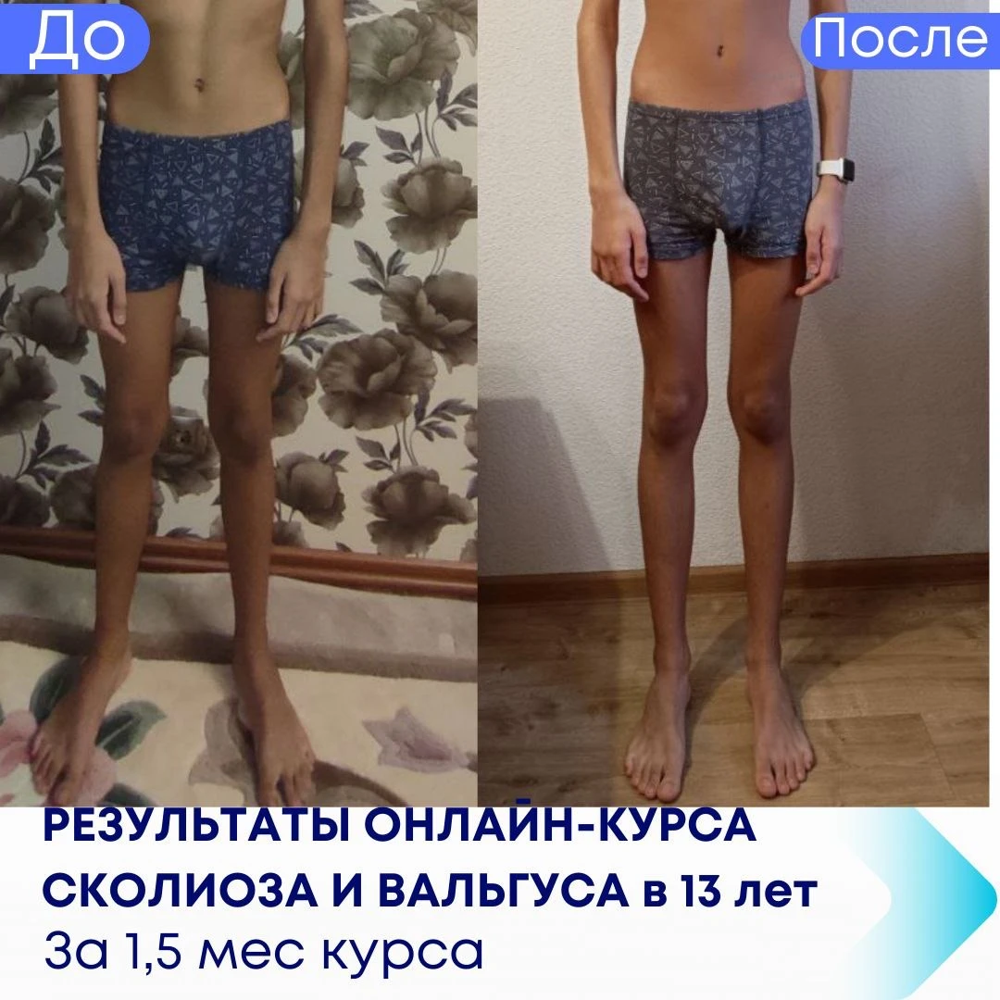
Не вірила, що за такий короткий час можливі такі зміни. Дитина займалась з повною відданістю, і результат — разючий. Рекомендую всім батькам!
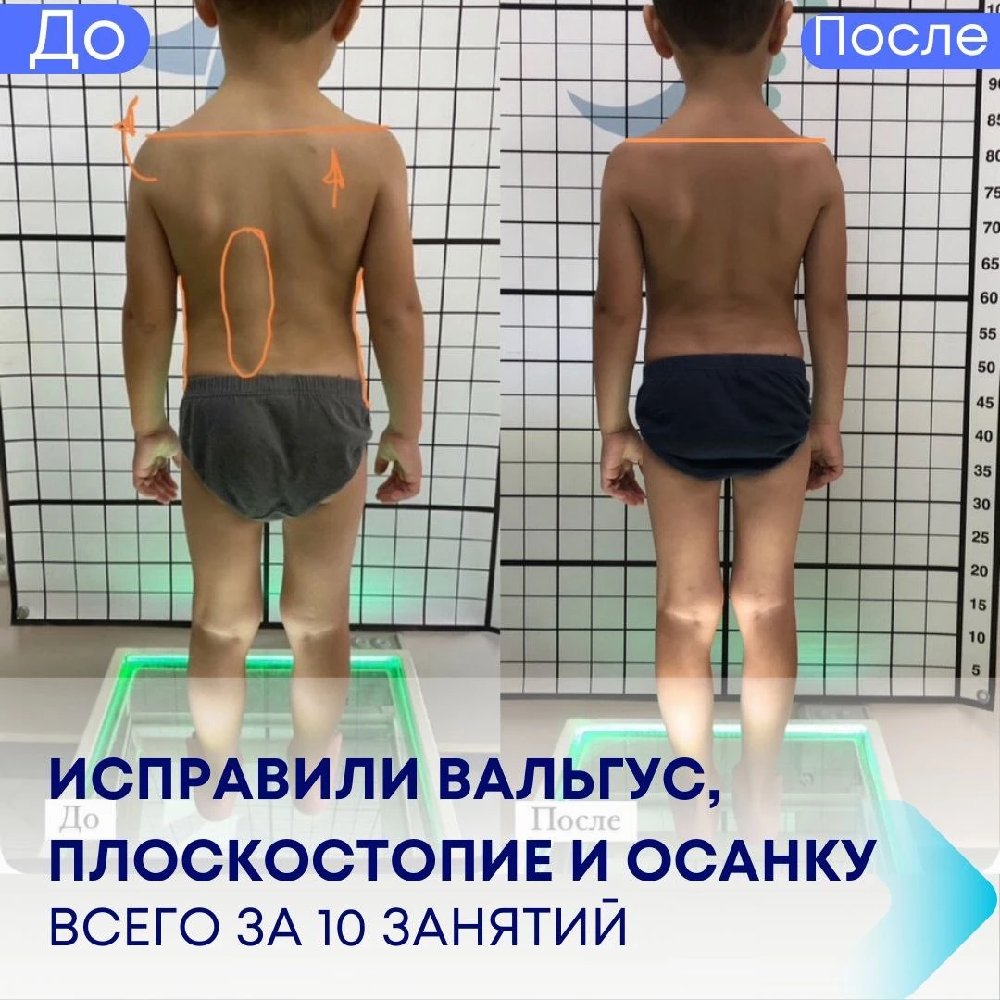
Прийшли з вираженим вальгусом та плоскостопістю. Програма вправ чітка та зрозуміла. Після 10 занять — зміни помітні навіть візуально.
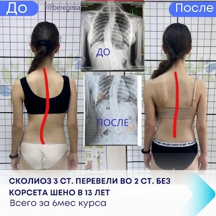
Нам казали, що без корсету нічого не вийде. Іван довів протилежне — за 6 місяців за методикою Schroth сколіоз знизився з 3-го до 2-го ступеня. Це реально!
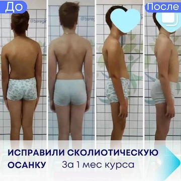
Вразило, що вже після першого місяця занять видно реальні зміни. Постава покращилась, дитина сама відчуває різницю. Продовжуємо курс далі.
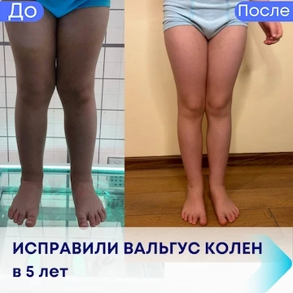
Маленькій дитині підібрали ігрові вправи, вона займається із задоволенням. Вальгус колін поступово коригується, ортопед підтвердив позитивну динаміку.
Прийшов із сутулістю та гіперлордозом поперекового відділу. Після 10 занять — постава значно покращилась, болі в попереку зменшились на 70%. Продовжую займатись.
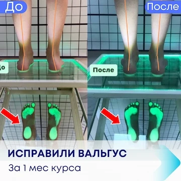
Всього місяць занять, а результат вже помітний. Індивідуальний підхід, чіткі вправи та постійна підтримка — саме це відрізняє Берегиню від інших.
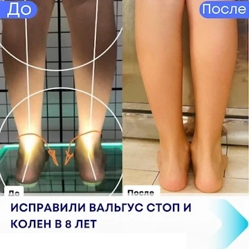
Дитина 8 років, виражений вальгус стоп та колін. Підібрали комплексну програму. Ходимо вже 4 місяці — прогрес стабільний, ортопед задоволений результатами.
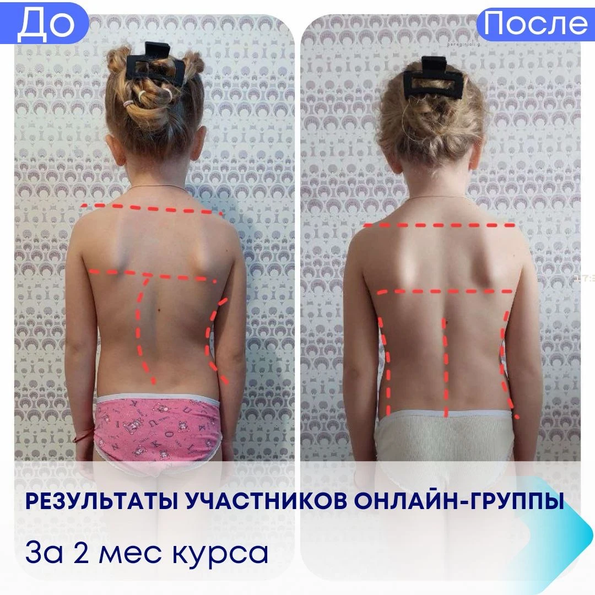
Займаємось онлайн — зручно, не треба нікуди їхати. За 2 місяці онлайн-курсу постава помітно покращилась. Іван пояснює чітко, завжди на зв'язку.
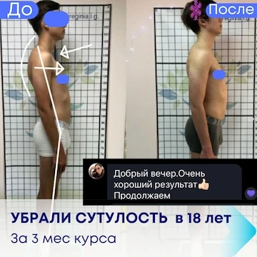
Добрий вечір. Дуже хороший результат, усунули сутулість в 18 років за 3 місяці курсу. Дуже рада, що знайшла Івана Газіна — він змінив моє ставлення до свого тіла.
Запишіться на первинну онлайн-діагностику — і станьте наступним успішним результатом.
Записатись на діагностику